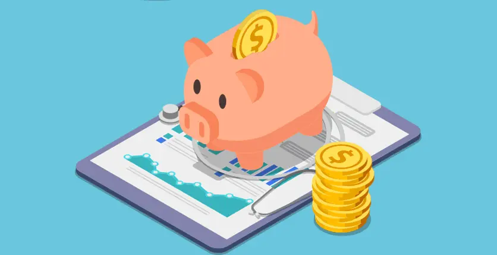

How I Optimize my Finances at 22 - Investments and Savings 📈
August 21, 2022

I’ll be turning 22 this year. So far, ever since I was 18, I’ve had a normal job as a barista, and mainly did freelance ever after, to this day actually.
When you’re still a student in university, and your income isn’t really great either, your ability to save and optimise your finances naturally develops. The alternative is to remain with empty pockets, which, while kind of expected while being a student, is nevertheless a harsh feeling.
It was through reading financial books that I figured out the importance of saving and investing. Here’s a list of them, in the order I read them, so you can get a clear picture of how my thinking developed.
-
“Rich Dad, Poor Dad” by R. Kiyosaki
This book taught me the basic principles of income and expenses. It’s generally considered the best 1st book you can read on the topic of personal finances. Some of the main topics it covers are:
- Liabilities VS Assets
- The differences between freelancers, employees, and businesspeople
- Inflation
- Why investing is important
- Investing VS Saving
- Short-term VS Long-term thinking
-
“I Will Teach You To Be Rich” by R. Sethi
For me this is the most influential of all the books in this list - it has taught thousands of people around the work how to achieve financial wellbeing and actually get rich through simple means. It goes into detail on the following:
- Is it that important to cut out on lattes? (being frugal)
- How you can focus on the Big Wins instead of the Small Cuts
- Principles of investing
- Index funds, ETFs, Bonds, Target Date Funds (TDFs)
-
“The Little Book That Still Beats the Market” by J. Greenblatt
As the name suggests, the book is a short one, and it helps justify some investing ideas, including:
- How to make better research of a stock
- How to not let the market eat your money
-
“The Total Money Makeover” by D. Ramsey
Now this is a classic in the genre. Truthfully, it’s mainly geared towards middle-aged US citizens, but it teaches the following:
- Debt - how to get rid of it or use it productively
- How to escape the rat race
- Thinking long-term about mortgages
- Credit scores
-
“The Millionaire Fastlane” by MJ DeMarco
This is one of the longer books in the list, and it works better as a manual, than as a simple book. It provides you with guidelines on how to live in 3 ways - as a Sidewalker, Slowlaner, and Fastlaner. It teaches the following:
- How to find a business niche
- How to use your business to generate personal wealth
- How to leverage your existing wealth to provide a good living
-
“The Psychology of Money” by M. Housel
This book was the most psychological of the list, expectedly so from the headline. It goes over some concepts that we rarely give thought to, including:
- Why poor people gamble
- Why different generations invest their money differently
- What financial security means to different people
Overall, these books lead me to generate a financial mantra and plan for myself, that I try my best to stick to. Of course, the plan sometimes deviates from the original idea, but the main concepts it follows are achieving financial freedom, preparing oneself for market volatility, and diversification. Let’s go over the ways I optimise my financials as a 22 year old, beginning with…
The Emergency Fund
You may have heard the saying that the average person is one medical emergency or car breakdown away from homelessness and poverty. It’s very easy to be pushed off-track, and especially when you’re young, your network may not be stable enough to support your eventual falling.
This is why many of the authors in the book listed above advise you to create an emergency fund. It’s called like so because you aren’t supposed to use it for anything that isn’t an emergency. It should be a moderate amount of money (the value fluctuates from person to person, the idea is to bring you a sense of security), that you have stashed away in an easily-accessible bank account. It’s supposed to be liquid money - if you have it invested in something, withdrawing it in case of emergency will result in either a loss, tons of fees, or both. For me, a starting emergency fund for my modest income is about 600$, enough to get me through a month without having to pull from any investments.
Speaking of investments…
Investing Strategy
What I have learnt from the books I’ve read on investing and personal finances so far, is that the earlier we start investing, the better. “Time in the market beats timing the market”, as they say.
So for me it was a big thing and very crucial to start investing as early as possible, with very small sums to start with. I’m a bit ashamed to admit that my first ever “investment” was triggered by the Gamestop frenzy of 2020, and as expected, it resulted in a loss. However, instead of discouraging me, it made me realise that this was just the “entrance fee” to the University of Investing. A much bigger financial loss would have been to never go into investing in the first place. Also, it taught me several other things, including:
- Don’t be greedy
- Think of the long term
- Do your diligent research of the stock/index
- Expect volatility
- Don’t panic sell
- Don’t act on emotions, act on rationale
So, to get to the meat of my investing strategy, as Ramit Sethi recommends, I take advantage of my relatively young age and longer time horizon, and I am all-in on stocks in the moment. My current portfolio is 80% SP500 ETFs (an index fund that tracks the top 500 US companies), around 15% in Bitcoin (to take advantage of the crypto bear market), and the remaining 5% is in random stocks that I have put some spare cash in occasionally.
The thing with investing while young is that you have to get used to being in the red a lot. Just a small percentage of investors is consistently in the green just 2 years into their investing journey. However, once a decade has passed, I am pretty confident that the growth of the bulk of my portfolio would make it hard for it to ever go in the red.